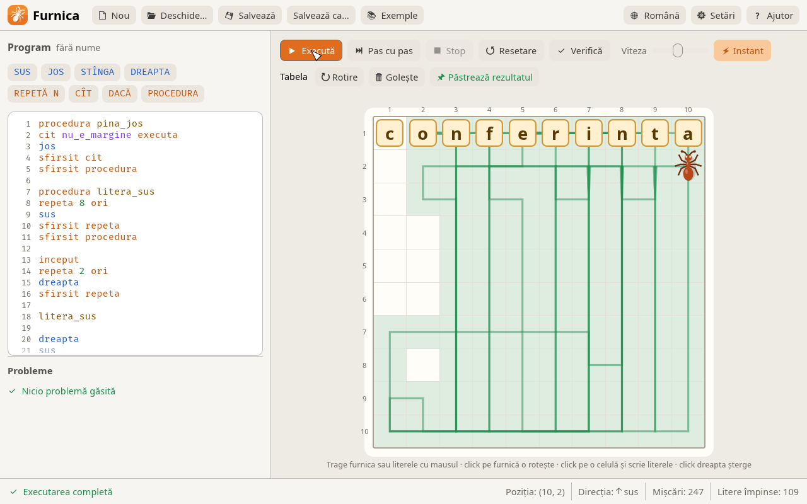
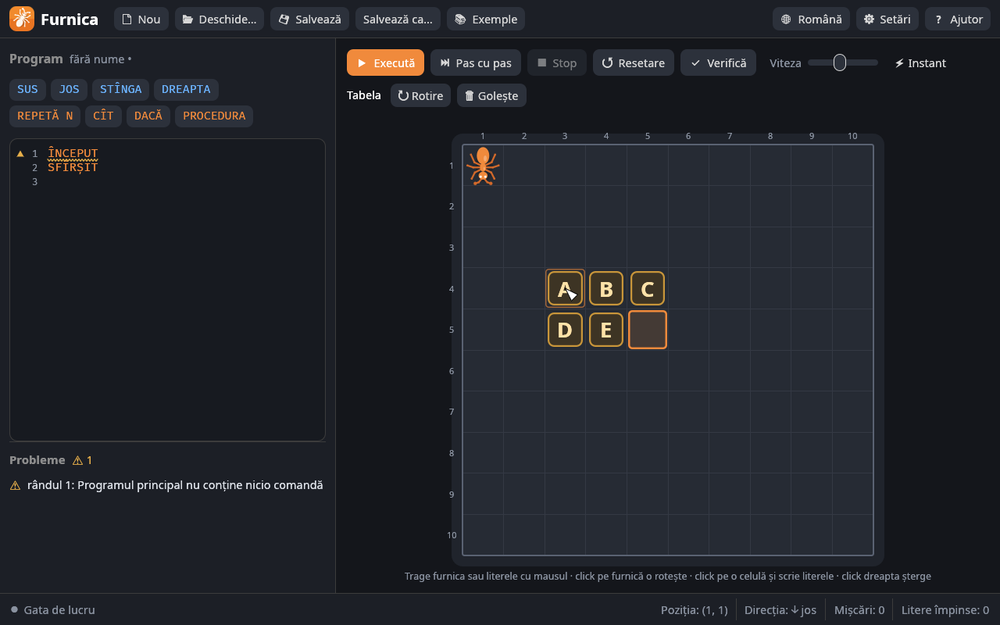
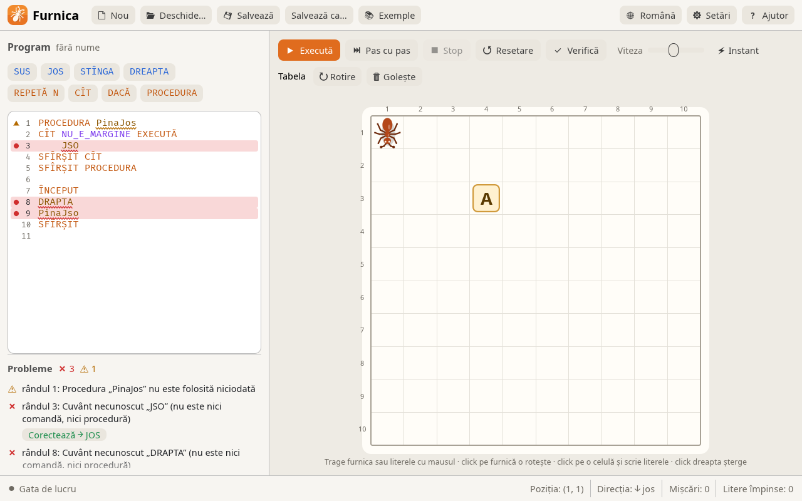

Furnica
The “Furnica” (Ant) executor for learning algorithms — students write a program and the ant runs it on a table of letters, pushing the letters out of its way.
The ant sits on a table of letters. The student writes a program with simple commands — UP, DOWN, LEFT, RIGHT, loops, conditions, and procedures — and the ant runs it step by step, pushing the letters out of its way. The goal: arrange the letters into a word. Furnica 3 is a Rust rewrite of the original “Furnica” program (Ant v2.00, 1999), and old .ant files open and run unchanged. Furnica is Romanian for “ant”.

Download Furnica · Program website · Source code on GitHub
Download and install¶
On the Releases page, pick the right file:
| System | File |
|---|---|
| Windows 10 / 11, 64-bit | furnica-<version>-windows-x64.msi (installer) or -windows-x64-portable.zip |
| Windows 10 / 11, 32-bit | furnica-<version>-windows-x86.msi or -windows-x86-portable.zip |
| Windows 7 and 8 (32- and 64-bit) | furnica-<version>-windows7-x86-portable.zip |
| macOS (Apple Silicon and Intel) | furnica-<version>-macos-universal.dmg |
| Ubuntu / Debian / Mint | furnica-<version>-linux-x86_64.deb |
| Any Linux | furnica-<version>-linux-x86_64.AppImage |
- Windows: the
.msiinstaller adds Furnica to the Start menu, and.antfiles open with a double click. The.zipneeds no installation: unzip it and runFurnica.exe. - macOS: open the
.dmgand dragFurnica.apponto Applications. The app is not signed with an Apple certificate, so on first launch: right click → Open (on macOS 15+: System Settings → Privacy & Security → Open Anyway). - Linux:
sudo apt install ./furnica-*.deborchmod +x furnica-*.AppImage && ./furnica-*.AppImage.
A whole lab
The installer can run silently: msiexec /i furnica-*.msi /qn. Add INSTALLFOLDER="D:\Furnica" for another folder and DESKTOPSHORTCUT="" to skip the desktop shortcut.
The language¶
| Command | What it does |
|---|---|
UP, DOWN, LEFT, RIGHT |
moves the ant one cell; a letter in the way is pushed |
BEGIN … END |
the main program |
REPEAT N TIMES … END REPEAT |
repeats N times |
WHILE condition DO … END WHILE |
repeats while the condition is true |
IF condition THEN command1 ELSE command2 |
branching (ELSE is optional) |
PROCEDURE name … END PROCEDURE |
defines a procedure (before BEGIN) |
name |
calls the procedure |
// … |
comment |
Conditions: BORDER (the ant is facing the edge of the table) and NOT_BORDER. The ant faces the direction it last moved in.
The ant cannot leave the table, cannot push a letter over the edge, and cannot push two letters in a row. In any of these cases the program stops with an error, and the spot is marked in red on the table.
First program¶
The ant starts in the top-left corner, and the letter A is in column 4, row 3. The program takes the ant above the letter, then pushes the letter down:
// My first program: the ant pushes the letter A
BEGIN
REPEAT 3 TIMES
RIGHT
END REPEAT
REPEAT 4 TIMES
DOWN
END REPEAT
END
Procedures and conditional loops¶
The “Margini” (Borders) example walks around the whole table, whatever its size: each procedure goes in one direction until it reaches the edge. Here it is in Romanian, as it ships with the program:
PROCEDURA jos_pina_la_margine
JOS
CÎT NU_E_MARGINE EXECUTĂ
JOS
SFÎRȘIT CÎT
SFÎRȘIT PROCEDURA
PROCEDURA dreapta_pina_la_margine
DREAPTA
CÎT NU_E_MARGINE EXECUTĂ
DREAPTA
SFÎRȘIT CÎT
SFÎRȘIT PROCEDURA
// … the same for up and left
ÎNCEPUT
jos_pina_la_margine
dreapta_pina_la_margine
sus_pina_la_margine
stinga_pina_la_margine
SFÎRȘIT
Keywords in three languages¶
They can be written in any of the languages, with or without diacritics (INCEPUT, SFIRSIT, STINGA work just the same).
| Română | English | Русский |
|---|---|---|
SUS JOS STÎNGA DREAPTA |
UP DOWN LEFT RIGHT |
ВВЕРХ ВНИЗ ВЛЕВО ВПРАВО |
ÎNCEPUT SFÎRȘIT |
BEGIN END |
НАЧАЛО КОНЕЦ |
REPETĂ ORI |
REPEAT TIMES |
ПОВТОРИ РАЗ |
CÎT EXECUTĂ |
WHILE DO |
ПОКА СДЕЛАЙ |
DACĂ ATUNCI ALTFEL |
IF THEN ELSE |
ЕСЛИ ТОГДА ИНАЧЕ |
PROCEDURA |
PROCEDURE |
ПРОЦЕДУРА |
E_MARGINE NU_E_MARGINE |
BORDER NOT_BORDER |
КРАЙ НЕ_КРАЙ |
Editing the table¶

- The ant is moved by dragging it with the mouse, and a click rotates it.
- Letters are typed on the keyboard, like text: click a cell and type, the cursor moves to the next cell on its own.
- Letters are moved by dragging; dragged off the table (or right-clicked) they are deleted.
- The table can be anywhere from 3 × 3 to 20 × 20 cells.
- After a run, the starting table stays unchanged; Keep result turns the resulting table into the new starting table.
Code analyzer¶

The program is checked on every change, and the analyzer finds all the mistakes, not just the first one:
- misspelled words get a wavy underline (red = error, yellow = warning); hovering shows the explanation;
- the Problems list below the editor shows every error, and a click takes the cursor to the word;
- misspelled words get a suggested fix (“Did you mean RIGHT?”) that the Fix button applies;
- a program with errors won't run; warnings (unused procedures, empty blocks,
WHILEloops that don't move the ant) don't block it.
Keyboard shortcuts¶
| Key | Action |
|---|---|
| F5 | run / pause |
| F6 | step by step |
| Esc | stop |
| F7 | check |
| Ctrl+Shift+F | format the program |
| Ctrl+N / Ctrl+O / Ctrl+S | new / open / save |
What's new compared to the original¶
| Interface | light and dark theme; interface in Romanian, Russian, and English |
| The ant | vector-drawn, turns smoothly and moves its legs when walking |
| Editor | line numbers, syntax highlighting, buttons that insert commands, auto-indent |
| Execution | smooth animation, current line highlighted, the ant's path drawn on the table; step by step or instant |
| Blocks | can be nested in any way (in the original REPEAT could not contain another REPEAT) |
| Table | edited directly, from 3 × 3 to 20 × 20 cells |